A 2017 graduate concept built on one reframe: a schedule isn’t a list of times — it’s a route through a city. Years before depart-time alerts went mainstream, we designed a calendar that thinks in time and place.
00 The Reframe
Every calendar event has a place, but calendars only manage time — the travel between events is invisible until you’re late. Beacon started from that gap: what if your day rendered as a journey on a map, and your calendar could tell you when to leave?
Our interviews kept surfacing the same anxiety: not forgetting the event — forgetting everything around it. When to depart, how long to prepare, what to bring. The minutes between events were nobody’s job.
Beacon draws today’s schedule as a route: events are pins, travel legs show duration and mode, routines budget your prep time — so the app can work backwards to “leave now.”
Depart-time alerts, ETA sharing, voice event capture — the industry shipped all of it in the years after. This is the origin of how I think about Geo problems: geography is the context that makes time meaningful.
01 Research
We interviewed calendar users across paper planners and mobile apps, then synthesized everything into an experience map — lenses, journey stages, what people did, thought, and felt.
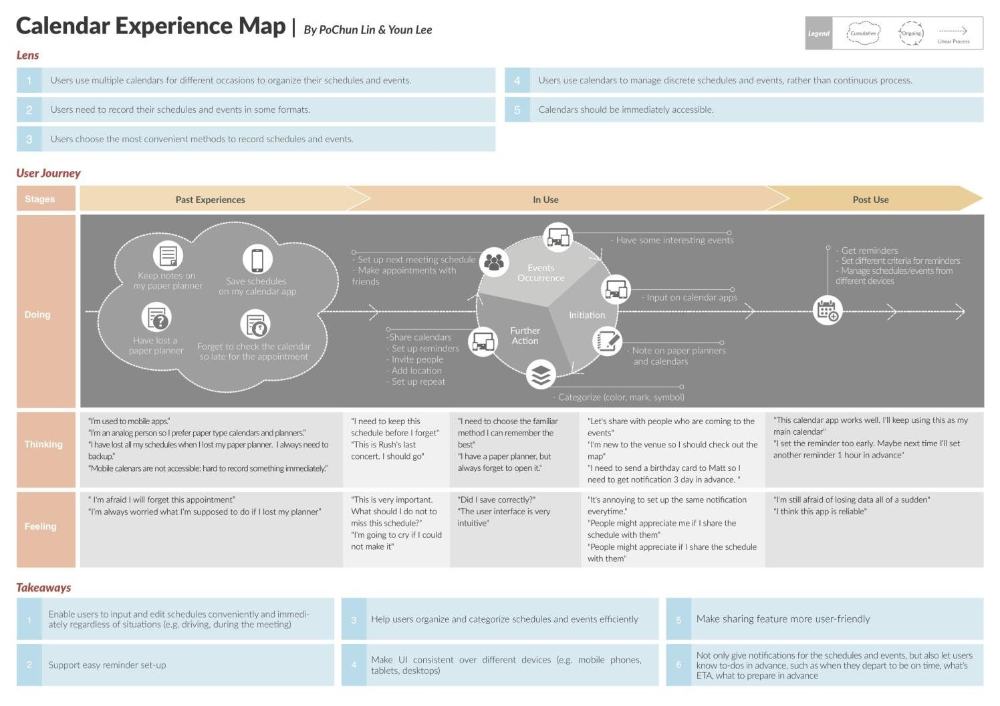
Takeaway #1: input has to work regardless of situation. This seeded the watch + voice scenarios — hands-free capture for moments when the phone is out of reach.
Takeaway #6: notifications should carry to-dos in advance — departure time, ETA, what to prepare. This is the seed of the whole time × place concept.
“It’s annoying to set up the same notification every time.” We heard it, noted it — and still shipped a setup-heavy routine builder. More on that in the epilogue.
02 The Map System
The screen I owned end-to-end. “Today’s Schedule” renders as a route: events are pins with time cards, and the legs between them show travel time and mode — the invisible minutes made visible.
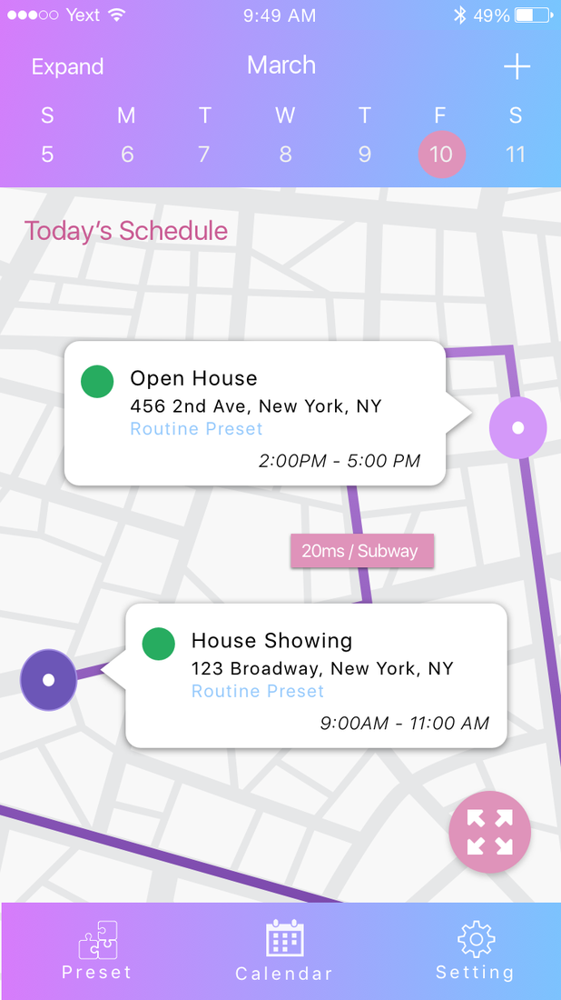
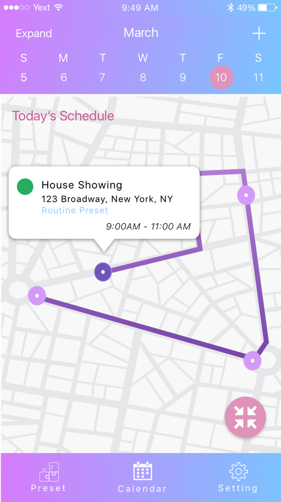
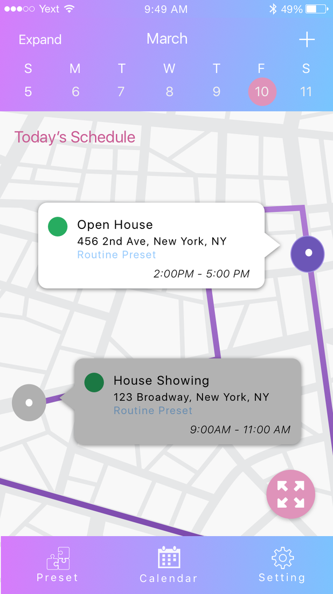
The zoom levels carry meaning, not just magnification: zoomed in, you negotiate the next hour; zoomed out, you read the shape of the whole day. State changes (a passed event dims) keep the map honest about now.
03 Time Budgeting
A depart alert is only as good as its inputs. Time Slots let users budget the prep chain — shower 15, makeup 20, breakfast 15, commute 40 — so “leave by 8:05” is arithmetic, not guesswork.
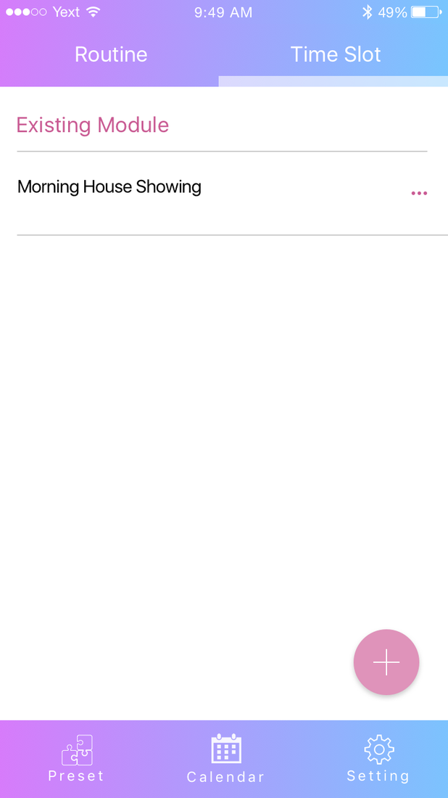
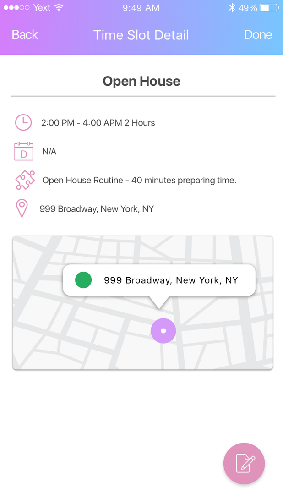
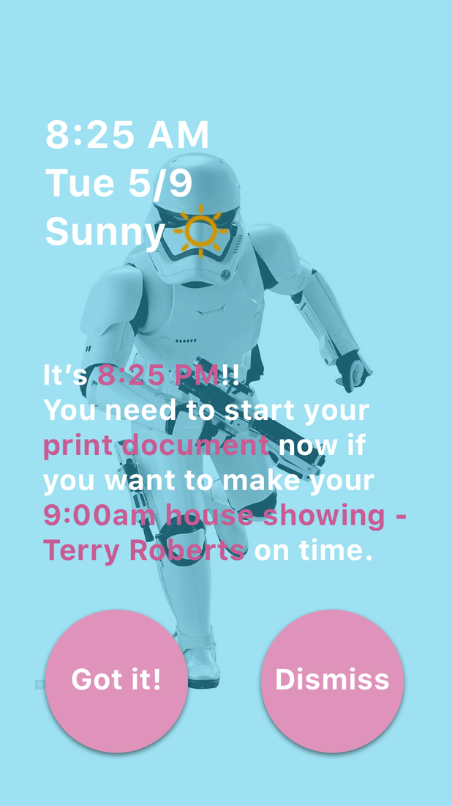
04 Beyond the Phone
Research takeaway #1 said input must survive real life. So Beacon extended to the watch: voice-first event capture and glanceable depart alerts, designed for the moments when hands and eyes are busy.
Scenario
Driving was our stress-test scenario: no screen, no hands. Voice capture on the watch turns a dangerous phone-fumble into a two-second sentence, and the confirmation is glanceable.
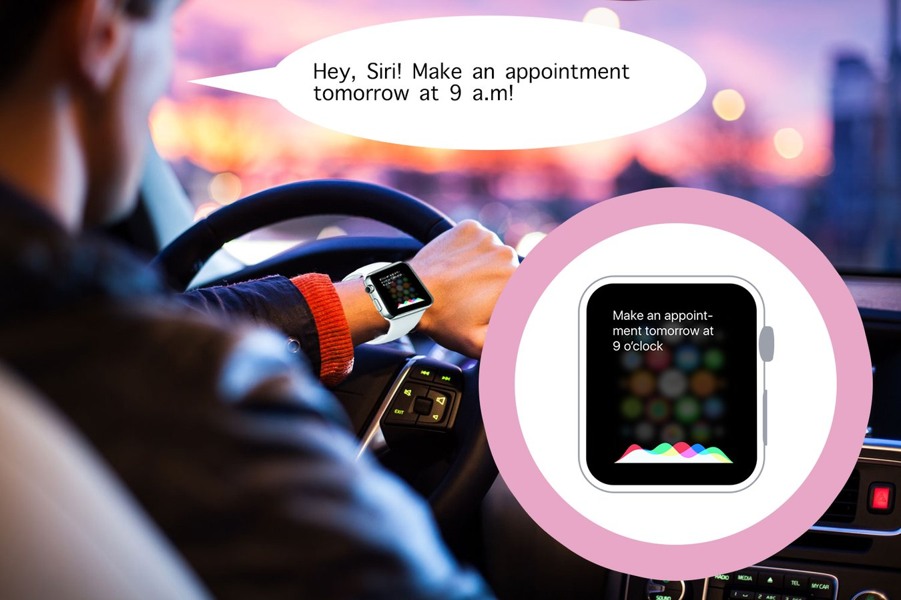
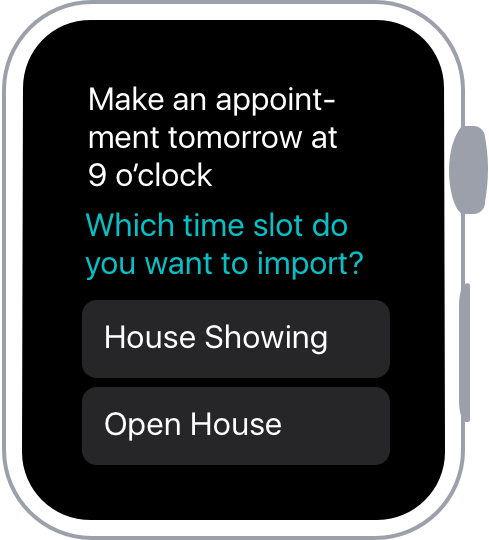
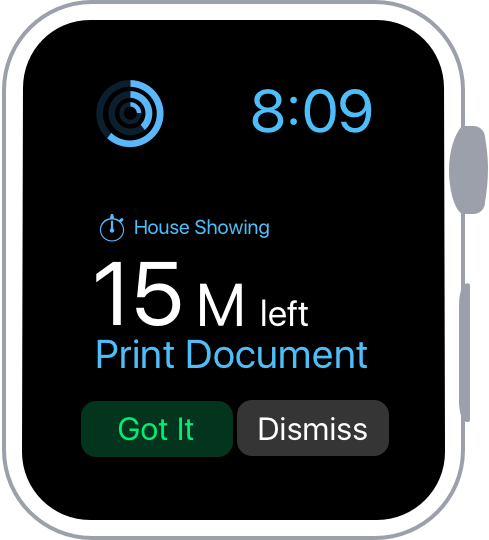
05 Prototype & Test
The system grew from sketches — event form, preset modules — through an information architecture, into a clickable prototype we put in front of users for swipe-through testing.
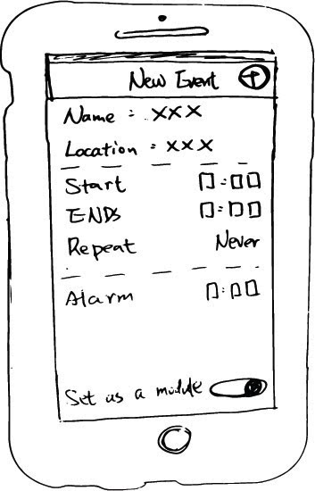
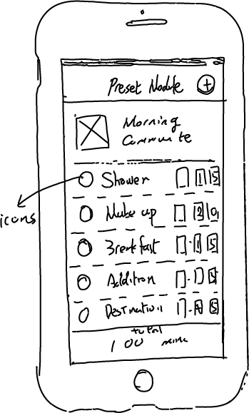
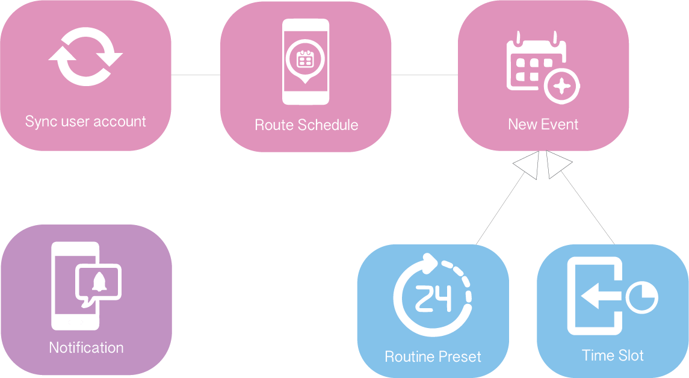
Our InfoShow demo reel — the concept end-to-end, from morning routine to route view to depart alert.
06 Epilogue
Eight years on, this concept reads like a roadmap of what the industry actually built. That’s the point of keeping it in my portfolio — and so is being honest about what student-me got wrong.
Time-to-leave notifications, ETA sharing, voice event capture, calendar-map integrations — mainstream products shipped every core idea here in the years after 2017. We weren’t the only ones seeing it, but the direction was right: geography is the context that makes time useful.
Users told us routine setup was annoying — we built a setup-heavy routine builder anyway. Today I’d start from learned patterns over manual configuration, design for location-data trust from day one, and ship one hero moment (the depart alert) instead of a six-module system.
Beacon is where I learned that maps aren’t a feature — they’re a way of thinking. Every project since, from Booking.com’s trip timelines to unified support journeys, has been the same question at different scales: where is the user, where are they going, and what do they need to get there?